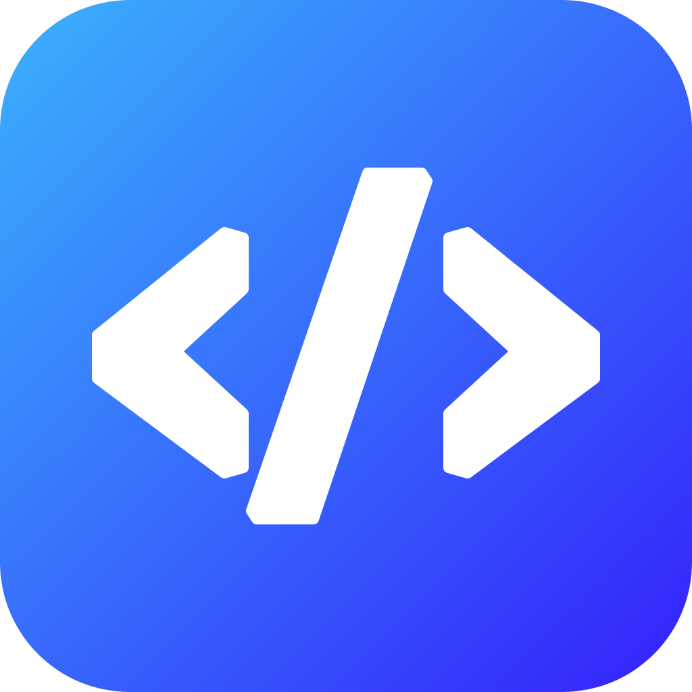

Política de Privacidade
Dev Panel · atualizada em 16 de novembro de 2026
O Dev Panel é um painel web de hospedagem para VPS Ubuntu, de uso pessoal e não comercial, mantido por Elimarcos Morais. Cada pessoa instala e executa o Dev Panel no próprio servidor. Esta política explica quais dados da conta Google o Dev Panel acessa quando o conector do Google Drive é usado, para quê, onde eles ficam e como removê-los. O conector do OneDrive, que usa uma conta Microsoft, é tratado na seção OneDrive.
Quais dados do Google são acessados
Ao vincular uma conta em Configurações → Conectores, o Dev Panel pede
somente o escopo https://www.googleapis.com/auth/drive.file. Com ele, o painel
acessa:
- os arquivos e as pastas que o próprio Dev Panel cria no Google Drive: os backups dos projetos e os arquivos e as pastas do servidor que o usuário escolhe enviar pelo gerenciador de arquivos (Arquivos → Enviar para → Google Drive), junto com as pastas criadas pelo painel para recebê-los;
- o endereço de e-mail da conta, para mostrar qual conta está conectada;
- o espaço usado e o espaço total do Drive, para mostrar quanto ainda cabe.
O Dev Panel não lê, não altera e não apaga nenhum outro arquivo do Drive, e não acessa contatos, e-mails, agenda ou qualquer outro serviço do Google.
Para que os dados são usados
Exclusivamente para as funções que o próprio usuário usa no painel: guardar e listar os backups no Drive dele; enviar ao Drive os arquivos e as pastas do servidor que ele escolhe, repetindo a árvore de pastas e substituindo um arquivo de mesmo nome só quando ele pede; criar, renomear e mover para a lixeira do Drive as pastas criadas pelo painel, a pedido dele; listar e baixar para o servidor o que o painel enviou; e mostrar a conta conectada e o espaço disponível. Os dados não são usados para publicidade, não são vendidos, não são usados para treinar modelos de inteligência artificial e não são lidos por pessoas.
Onde os dados ficam
- A autorização do Google (o refresh token) é guardada criptografada (AES-256-GCM) no banco de dados do painel, no servidor de quem o instalou, junto com o e-mail da conta.
- O token de acesso de curta duração fica só na memória do servidor e nunca é gravado em disco.
- Os backups e os arquivos enviados ficam no Google Drive do próprio usuário. No envio, o arquivo vai do servidor direto para o Google, sem cópia em outro lugar, e o endereço da sessão de envio do Google é tratado como segredo: não é gravado nem aparece em registro.
A comunicação acontece apenas entre o servidor do usuário e as APIs do Google, por HTTPS. Nenhum dado da conta Google é enviado ao desenvolvedor do Dev Panel nem a terceiros: o desenvolvedor não opera servidor nenhum que receba esses dados.
Compartilhamento
O Dev Panel não compartilha, não transfere e não divulga dados recebidos das APIs do Google. O uso e a transferência, para qualquer outro aplicativo, das informações recebidas das APIs do Google seguem a Política de Dados do Usuário dos Serviços de API do Google, incluindo os requisitos de Uso Limitado.
Retenção e exclusão
Os dados ficam no servidor enquanto a conta estiver conectada. Em Configurações → Conectores → Desconectar, o painel revoga a autorização no Google e apaga o token e o e-mail do banco de dados. O acesso também pode ser revogado a qualquer momento em myaccount.google.com/permissions. Os backups, os arquivos e as pastas já gravados no Drive continuam lá até o usuário apagá-los. Uma pasta que o usuário manda para a lixeira pelo painel vai para a lixeira do Google Drive, de onde pode ser restaurada por 30 dias.
OneDrive (conta Microsoft)
Quais dados da Microsoft são acessados
Ao vincular uma conta Microsoft (pessoal, de trabalho ou de escola) em Configurações → Conectores → OneDrive, a autorização é feita na página da própria Microsoft, e o Dev Panel pede somente estas permissões:
-
Files.ReadWrite.AppFolder: alcança apenas a pastaApps/Dev Panel, que a Microsoft cria no OneDrive para o app, nunca o resto do OneDrive; User.Read: usada só para ler o endereço de e-mail da conta, para mostrar qual conta está conectada;offline_access: para manter o vínculo sem pedir a autorização de novo a cada uso.
Hoje o painel lê da conta Microsoft apenas o e-mail: ele não lista, não envia e não baixa arquivos do OneDrive, e não acessa e-mails, contatos, agenda ou qualquer outro serviço da Microsoft. Quando isso mudar, esta política muda junto.
Onde os dados ficam e compartilhamento
A autorização da Microsoft (o refresh token) é guardada criptografada (AES-256-GCM) no banco de dados do painel, no servidor de quem o instalou, junto com o e-mail da conta; quando a Microsoft entrega um refresh token novo, ele substitui o antigo do mesmo jeito. O token de acesso de curta duração fica só na memória do servidor e nunca é gravado em disco. A comunicação acontece apenas entre o servidor do usuário e a Microsoft, por HTTPS. Nenhum dado da conta Microsoft é enviado ao desenvolvedor do Dev Panel nem a terceiros, e esses dados não são usados para publicidade, não são vendidos, não são usados para treinar modelos de inteligência artificial e não são lidos por pessoas.
Retenção e exclusão
Os dados ficam no servidor enquanto a conta estiver conectada. Em Configurações → Conectores → OneDrive → Desconectar, o painel apaga o token e o e-mail do banco de dados. A Microsoft não deixa um app revogar o próprio acesso, então a revogação é feita pelo usuário nas permissões de apps da conta Microsoft, em account.live.com/consent/Manage, ou, numa conta de trabalho ou escola, em Meus Aplicativos.
Este site
Esta página é estática, hospedada pelo GitHub Pages, sem cookies, formulários ou ferramentas de análise. O GitHub pode registrar dados técnicos de acesso, como o endereço IP, conforme a declaração de privacidade do GitHub.
Alterações e contato
Mudanças nesta política são publicadas nesta página, com a nova data de atualização. Dúvidas ou pedidos sobre privacidade podem ser enviados pelas issues do repositório do site.
English
Last updated: November 16, 2026.
Dev Panel is a personal, non-commercial web hosting control panel for Ubuntu VPS servers, maintained by Elimarcos Morais. Each user installs and runs it on their own server.
Data accessed
When a Google account is linked in Configurações → Conectores
(Settings → Connectors), Dev Panel
requests only the https://www.googleapis.com/auth/drive.file scope. It
accesses the files and folders Dev Panel itself creates in Google Drive (project backups,
the server files and folders the user chooses to send through the file manager, and the
folders the panel creates to hold them), the account's email address (to show which account is connected) and the Drive storage
usage and limit. It never reads, changes or deletes any other file, and it does not
access any other Google service.
Use
Data is used only for the features the user runs in the panel: storing and listing backups; sending to Drive the server files and folders the user chooses, mirroring the folder tree and replacing a file of the same name only when the user asks; creating, renaming and moving to the Drive trash the folders the panel created, at the user's request; listing and downloading to the server what the panel sent; and showing the connected account and available storage. It is not used for advertising, not sold, not used to train AI models and not read by humans.
Storage
The Google refresh token is stored encrypted (AES-256-GCM) in the panel's database on the user's own server, together with the account email. The short-lived access token is kept only in memory. Sent files go from the server straight to Google, and the address of Google's upload session is treated as a secret, never stored nor logged. Data flows only between the user's server and Google APIs over HTTPS; no Google user data is ever sent to the developer or to third parties.
Sharing
Dev Panel does not share, transfer or disclose data received from Google APIs. Dev Panel's use and transfer to any other app of information received from Google APIs will adhere to the Google API Services User Data Policy, including the Limited Use requirements.
Retention and deletion
Data is kept while the account is connected. Configurações → Conectores → Desconectar (Settings → Connectors → Disconnect) revokes the authorization at Google and deletes the token and the email from the database. Access can also be revoked at any time at myaccount.google.com/permissions. Backups, files and folders already in Drive remain there until the user deletes them; a folder the user moves to the trash through the panel goes to the Google Drive trash, where it can be restored for 30 days.
OneDrive (Microsoft account)
When a Microsoft account (personal, work or school) is linked in
Configurações → Conectores → OneDrive, authorization happens on
Microsoft's own page and Dev Panel requests only Files.ReadWrite.AppFolder,
which reaches only the Apps/Dev Panel folder Microsoft creates for the app in
OneDrive, never the rest of OneDrive; User.Read, used only to read the
account's email address and show which account is connected; and
offline_access, to keep the link. Today the panel reads only that email: it
does not list, upload or download OneDrive files, and it does not access any other
Microsoft service. This policy will change when that does.
The Microsoft refresh token is stored encrypted (AES-256-GCM) in the panel's database on the user's own server, together with the account email, and a new refresh token issued by Microsoft replaces the old one the same way. The short-lived access token is kept only in memory. Data flows only between the user's server and Microsoft over HTTPS; no Microsoft account data is ever sent to the developer or to third parties, used for advertising, sold, used to train AI models or read by humans.
Configurações → Conectores → OneDrive → Desconectar (Settings → Connectors → OneDrive → Disconnect) deletes the token and the email from the database. Microsoft does not let an app revoke its own access, so the user revokes it in the app permissions of the Microsoft account at account.live.com/consent/Manage or, for a work or school account, in My Apps.
This site and contact
This static page is hosted by GitHub Pages, with no cookies, forms or analytics; GitHub may log technical access data such as IP addresses under its own privacy statement. Changes are published here with a new date. Privacy questions or requests can be sent through the site repository issues.